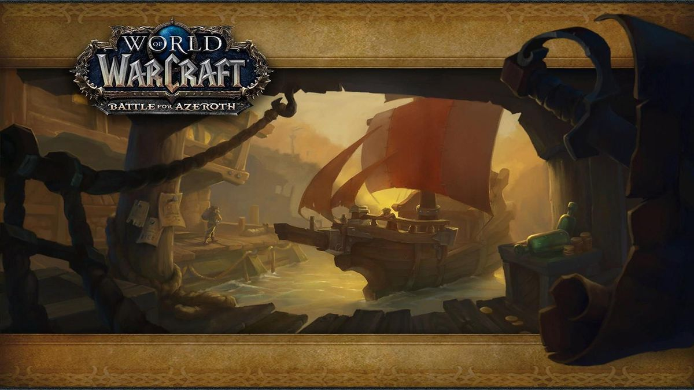
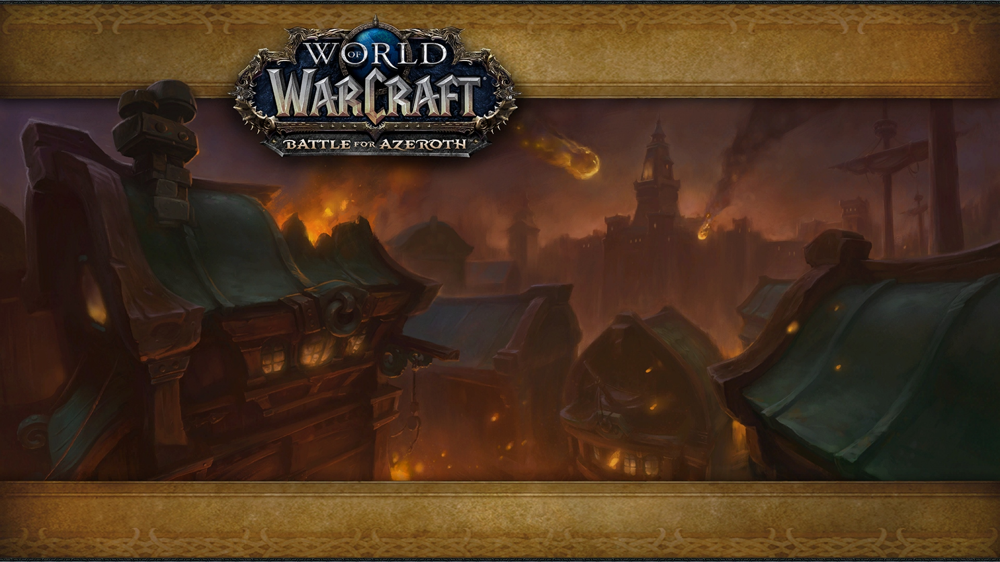

Atal'Dazar
Atal'Dazar is a max-level dungeon located in Zuldazar. It is available to Level 110 players on Normal difficulty and level 120 players on Heroic, Mythic, and Mythic+ difficulties. This guide will outline strategies and important role-based responsibilities for each of the 4 bosses in Atal'Dazar, as well as some tips on particularly threatening trash mobs. When running this dungeon in Mythic+, additional affixes will be present on the enemies in the dungeon, affecting the way they behave.
Loot drops at ilvl 310 on Normal mode for level 120 players, ilvl 325 on Heroic and ilvl 340 on Mythic. For Mythic+ Dungeons, loot does not drop per boss. At the end of the dungeon, a special chest will spawn that contains loot from the dungeon, for which the base ilvl increases based on the Mythic Keystone level. The loot is personal, so each player should loot it to see what their reward is. Two pieces of loot are guaranteed and the items will be appropriate to the player's class/spec. In addition, all loot in Battle for Azeroth is on an ilvl spectrum. Most loot has a base ilvl and a progressively smaller chance to appear as a Warforged version, increasing in intervals of +5 ilvls. Learn more about loot in the BfA Gearing Guide. Dungeon loot can also be found at random on World Quests, including quests that send you into the dungeon, as well as quests to kill random elites.
Freehold
Freehold is a max-level dungeon located in Tiragarde Sound. It is available to Level 110 Alliance players on Normal difficulty and level 120 players on Heroic, Mythic, and Mythic+ difficulties. This guide will outline strategies and important role-based responsibilities for each of the 4 bosses in Freehold, as well as some tips on particularly threatening trash mobs. When running this dungeon in Mythic+, additional affixes will be present on the enemies in the dungeon, affecting the way they behave.
Loot drops at ilvl 310 on Normal mode for level 120 players, ilvl 325 on Heroic and ilvl 340 on Mythic. For Mythic+ Dungeons, loot does not drop per boss. At the end of the dungeon, a special chest will spawn that contains loot from the dungeon, for which the base ilvl increases based on the Mythic Keystone level. The loot is personal, so each player should loot it to see what their reward is. Two pieces of loot are guaranteed and the items will be appropriate to the player's class/spec. In addition, all loot in Battle for Azeroth is on an ilvl spectrum. Most loot has a base ilvl and a progressively smaller chance to appear as a Warforged version, increasing in intervals of +5 ilvls. Learn more about loot in the BfA Gearing Guide. Dungeon loot can also be found at random on World Quests, including quests that send you into the dungeon, as well as quests to kill random elites.

Kings' Rest
King's Rest is a max-level dungeon located in Zuldazar. It is available to Level 120 players on Heroic, Mythic and Mythic+ difficulties only. This guide will outline strategies and important role-based responsibilities for each of the 4 bosses in King's Rest, as well as some tips on particularly threatening trash mobs. When running this dungeon in Mythic+, additional affixes will be present on the enemies in the dungeon, affecting the way they behave.
Loot drops at ilvl 340 on Mythic. For Mythic+ Dungeons, loot does not drop per boss. At the end of the dungeon, a special chest will spawn that contains loot from the dungeon, for which the base ilvl increases based on the Mythic Keystone level. The loot is personal, so each player should loot it to see what their reward is. Two pieces of loot are guaranteed and the items will be appropriate to the player's class/spec. In addition, all loot in Battle for Azeroth is on an ilvl spectrum. Most loot has a base ilvl and a progressively smaller chance to appear as a Warforged version, increasing in intervals of +5 ilvls. Learn more about loot in the BfA Gearing Guide. Dungeon loot can also be found at random on World Quests, including quests that send you into the dungeon, as well as quests to kill random elites.

Operation Mechagon
Operation: Mechagon is a max-level dungeon located on Mechagon. It is available to Level 120 players on Mythic difficulty only and is considered to be a megadungeon, similar to Legion's Return to Karazhan. Operation: Mechagon contains 8 bosses and has a weekly lockout. This guide will outline strategies and important role-based responsibilities for each of the 8 bosses in Operation: Mechagon, how to activate the known Hard Mode encoutners, as well as some tips on particularly threatening trash mobs. In Patch 8.3, Heroic and Mythic+ difficulties will be added to Operation: Mechagon. For these difficulties, it will be split into two different instances. The official names are: Operation: Mechagon - Junkyard - Gunker, Trixie & Naeno, King Gobbamak, HK-8 Operation: Mechagon - Workshop - Tussle Tonks, K.U.J.O., Head Machinist Sparkflame, King Mechagon Heroic Mechagon is available in the Dungeon Finder, so if you haven't managed to experience this dungeon yet, you'll be able to queue for it in 8.3!
Loot in Operation: Mechagon consists of the following: 415 item level armor, weapons and trinkets. 415 item level conditional rings, that when fused together, have interesting bonuses. 415 item level shoulder and chest Azerite Armor. Yellow, Red, and Blue Punchcards Vision of Perfection Azerite Essence and Upgrades A full list of drops can be found in the Operation: Mechagon Loot Guide. There are also some interesting rewards for collectors: Mechagon Peacekeeper is a rare drop from HK-8 Aerial Oppression Unit, the 4th boss of the dungeon. Aerial Unit R-21/X is a rare drop from King Mechagon, the last boss of the dungeon. This is a flying mount. Microbot 8D is a rare drop from HK-8 Aerial Oppression Unit, the 4th boss of the dungeon. Golden Snorf is a rare drop from King Mechagon, the last boss of the dungeon. Some patterns for new profession recipes drop in Operation: Mechagon.
The MOTHERLODE!!
The MOTHERLODE!! is a max-level dungeon located in Kezan. The dungeon entrance is located in Zuldazar. It is available to Level 115 Horde players on Normal difficulty and level 120 players on Heroic, Mythic, and Mythic+ difficulties. This guide will outline strategies and important role-based responsibilities for each of the 4 bosses in The MOTHERLODE!!, as well as some tips on particularly threatening trash mobs. When running this dungeon in Mythic+, additional affixes will be present on the enemies in the dungeon, affecting the way they behave.
The MOTHERLODE!! is a max-level dungeon located in Kezan. The dungeon entrance is located in Zuldazar. It is available to Level 115 Horde players on Normal difficulty and level 120 players on Heroic, Mythic, and Mythic+ difficulties. This guide will outline strategies and important role-based responsibilities for each of the 4 bosses in The MOTHERLODE!!, as well as some tips on particularly threatening trash mobs. When running this dungeon in Mythic+, additional affixes will be present on the enemies in the dungeon, affecting the way they behave. Rewards You can complete the achievements Pitch Invasion and Ready for Raiding VI towards Glory of the Wartorn Hero which awards Reins of the Obsidian Krolusk. Hydrocore also has a chance to drop from end-of-dungeon bosses until January 22nd at which point Tidalcore will start to drop. Special Mount Schematic A special drop from The MOTHERLODE!! is Schematic: Mecha-Mogul Mk2 which allows you to craft an amazing mount! Loot Loot drops at ilvl 310 on Normal mode for level 120 players, ilvl 325 on Heroic and ilvl 340 on Mythic. For Mythic+ Dungeons, loot does not drop per boss. At the end of the dungeon, a special chest will spawn that contains loot from the dungeon, for which the base ilvl increases based on the Mythic Keystone level. The loot is personal, so each player should loot it to see what their reward is. Two pieces of loot are guaranteed and the items will be appropriate to the player's class/spec. In addition, all loot in Battle for Azeroth is on an ilvl spectrum. Most loot has a base ilvl and a progressively smaller chance to appear as a Warforged version, increasing in intervals of +5 ilvls. Learn more about loot in the BfA Gearing Guide. Dungeon loot can also be found at random on World Quests, including quests that send you into the dungeon, as well as quests to kill random elites.
Siege of Boralus
Siege of Boralus is a max-level dungeon located in Tiragarde Sound. It is available to Level 120 Alliance players on Heroic, Mythic and Mythic+ difficulties only. This guide will outline strategies and important role-based responsibilities for each of the 5 bosses in Siege of Boralus, as well as some tips on particularly threatening trash mobs. When running this dungeon in Mythic+, additional affixes will be present on the enemies in the dungeon, affecting the way they behave. This is the only dungeon in Battle for Azeroth in which the Alliance and Horde have different versions. The differences are mainly cosmetic, with trash & the first boss having different names, however the route towards the first boss is also slightly different. This route has the same trash enemies for both Alliance and Horde, and as the route is pretty linear we will not be covering this minor route change in this guide. Any large differences between the versions have been noted throughout the guide.
Loot drops at ilvl 340 on Mythic. For Mythic+ Dungeons, loot does not drop per boss. At the end of the dungeon, a special chest will spawn that contains loot from the dungeon, for which the base ilvl increases based on the Mythic Keystone level. The loot is personal, so each player should loot it to see what their reward is. Two pieces of loot are guaranteed and the items will be appropriate to the player's class/spec. In addition, all loot in Battle for Azeroth is on an ilvl spectrum. Most loot has a base ilvl and a progressively smaller chance to appear as a Warforged version, increasing in intervals of +5 ilvls. Learn more about loot in the BfA Gearing Guide. Dungeon loot can also be found at random on World Quests, including quests that send you into the dungeon, as well as quests to kill random elites.

Shrine of the storm
Shrine of the Storm is a max-level dungeon located in Stormsong Valley. It is available to Level 110 Alliance players on Normal difficulty and level 120 players on Heroic, Mythic, and Mythic+ difficulties. This guide will outline strategies and important role-based responsibilities for each of the 4 bosses in Shrine of the Storm, as well as some tips on particularly threatening trash mobs. When running this dungeon in Mythic+, additional affixes will be present on the enemies in the dungeon, affecting the way they behave.
Loot drops at ilvl 310 on Normal mode for level 120 players, ilvl 325 on Heroic and ilvl 340 on Mythic. For Mythic+ Dungeons, loot does not drop per boss. At the end of the dungeon, a special chest will spawn that contains loot from the dungeon, for which the base ilvl increases based on the Mythic Keystone level. The loot is personal, so each player should loot it to see what their reward is. Two pieces of loot are guaranteed and the items will be appropriate to the player's class/spec. In addition, all loot in Battle for Azeroth is on an ilvl spectrum. Most loot has a base ilvl and a progressively smaller chance to appear as a Warforged version, increasing in intervals of +5 ilvls. Learn more about loot in the BfA Gearing Guide. Dungeon loot can also be found at random on World Quests, including quests that send you into the dungeon, as well as quests to kill random elites.

Tol dagor
Tol Dagor is a max-level dungeon located in Tiragarde Sound. It is available to Level 115 Alliance players on Normal difficulty and level 120 players on Heroic, Mythic, and Mythic+ difficulties. This guide will outline strategies and important role-based responsibilities for each of the 4 bosses in Tol Dagor, as well as some tips on particularly threatening trash mobs. When running this dungeon in Mythic+, additional affixes will be present on the enemies in the dungeon, affecting the way they behave.
Loot drops at ilvl 310 on Normal mode for level 120 players, ilvl 325 on Heroic and ilvl 340 on Mythic. For Mythic+ Dungeons, loot does not drop per boss. At the end of the dungeon, a special chest will spawn that contains loot from the dungeon, for which the base ilvl increases based on the Mythic Keystone level. The loot is personal, so each player should loot it to see what their reward is. Two pieces of loot are guaranteed and the items will be appropriate to the player's class/spec. In addition, all loot in Battle for Azeroth is on an ilvl spectrum. Most loot has a base ilvl and a progressively smaller chance to appear as a Warforged version, increasing in intervals of +5 ilvls. Learn more about loot in the BfA Gearing Guide. Dungeon loot can also be found at random on World Quests, including quests that send you into the dungeon, as well as quests to kill random elites.

Temple of Sethraliss
Temple of Sethraliss is a max-level dungeon located in Vol'dun. It is available to Level 110 Horde players on Normal difficulty and level 120 players on Heroic, Mythic, and Mythic+ difficulties. This guide will outline strategies and important role-based responsibilities for each of the 4 bosses in Temple of Sethraliss, as well as some tips on particularly threatening trash mobs. When running this dungeon in Mythic+, additional affixes will be present on the enemies in the dungeon, affecting the way they behave.
Loot drops at ilvl 310 on Normal mode for level 120 players, ilvl 325 on Heroic and ilvl 340 on Mythic. For Mythic+ Dungeons, loot does not drop per boss. At the end of the dungeon, a special chest will spawn that contains loot from the dungeon, for which the base ilvl increases based on the Mythic Keystone level. The loot is personal, so each player should loot it to see what their reward is. Two pieces of loot are guaranteed and the items will be appropriate to the player's class/spec. In addition, all loot in Battle for Azeroth is on an ilvl spectrum. Most loot has a base ilvl and a progressively smaller chance to appear as a Warforged version, increasing in intervals of +5 ilvls. Learn more about loot in the BfA Gearing Guide. Dungeon loot can also be found at random on World Quests, including quests that send you into the dungeon, as well as quests to kill random elites.

The Underrot
The Underrot is a max-level dungeon located in Nazmir. It is available to Level 110 Horde players on Normal difficulty and level 120 players on Heroic, Mythic, and Mythic+ difficulties. This guide will outline strategies and important role-based responsibilities for each of the 4 bosses in The Underrot, as well as some tips on particularly threatening trash mobs. When running this dungeon in Mythic+, additional affixes will be present on the enemies in the dungeon, affecting the way they behave.
Loot drops at ilvl 310 on Normal mode for level 120 players, ilvl 325 on Heroic and ilvl 340 on Mythic. For Mythic+ Dungeons, loot does not drop per boss. At the end of the dungeon, a special chest will spawn that contains loot from the dungeon, for which the base ilvl increases based on the Mythic Keystone level. The loot is personal, so each player should loot it to see what their reward is. Two pieces of loot are guaranteed and the items will be appropriate to the player's class/spec. In addition, all loot in Battle for Azeroth is on an ilvl spectrum. Most loot has a base ilvl and a progressively smaller chance to appear as a Warforged version, increasing in intervals of +5 ilvls. Learn more about loot in the BfA Gearing Guide. Dungeon loot can also be found at random on World Quests, including quests that send you into the dungeon, as well as quests to kill random elites.

Waycrest Manor
Waycrest Manor is a max-level dungeon located in Drustvar. It is available to Level 110 Alliance players on Normal difficulty and level 120 players on Heroic, Mythic, and Mythic+ difficulties. This guide will outline strategies and important role-based responsibilities for each of the 5 bosses in Waycrest Manor, as well as some tips on particularly threatening trash mobs. When running this dungeon in Mythic+, additional affixes will be present on the enemies in the dungeon, affecting the way they behave.
Loot drops at ilvl 310 on Normal mode for level 120 players, ilvl 325 on Heroic and ilvl 340 on Mythic. For Mythic+ Dungeons, loot does not drop per boss. At the end of the dungeon, a special chest will spawn that contains loot from the dungeon, for which the base ilvl increases based on the Mythic Keystone level. The loot is personal, so each player should loot it to see what their reward is. Two pieces of loot are guaranteed and the items will be appropriate to the player's class/spec. In addition, all loot in Battle for Azeroth is on an ilvl spectrum. Most loot has a base ilvl and a progressively smaller chance to appear as a Warforged version, increasing in intervals of +5 ilvls. Learn more about loot in the BfA Gearing Guide. Dungeon loot can also be found at random on World Quests, including quests that send you into the dungeon, as well as quests to kill random elites.